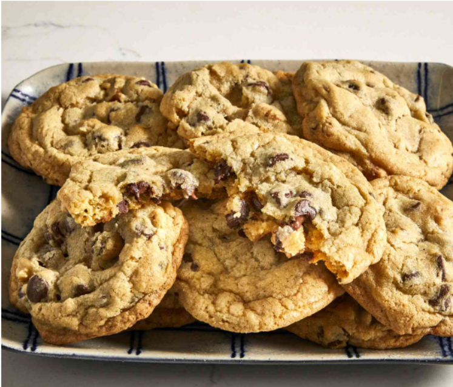

Chocolate Chip Cookies

Description
This chocolate chip cookie recipe makes delicious cookies with crisp edges
and chewy middles.
Ingredients
-
Butter: This classic chocolate chip cookie recipe starts with two
sticks of butter creamed with white and brown sugars. The blend of
sugars creates a perfectly balanced flavor.
-
Eggs: Eggs add moisture and act as a binding agent, which means
they help hold the dough together.
-
Vanilla: Vanilla extract enhances the overall flavor of the
chocolate chip cookies.
-
Baking soda: Baking soda acts as a leavener, which means it helps
the cookies rise.
-
Water: A bit of hot water creates steam as it bakes, working with
the baking soda to puff the cookies up.
-
Salt: A pinch of salt enhances the flavors of the other
ingredients, but it won't make the cookies taste salty.
-
Flour: All-purpose flour helps create gluten, which adds
structure to the cookie dough.
-
Chocolate chips: Of course, you'll need semisweet chocolate
chips! You can use dark or milk chocolate chips if you prefer.
-
Nuts (optional): Walnuts are optional, but they add nutty flavor
and a welcome crunch.
Steps
- Beat the butter and sugars, then beat in the eggs and vanilla.
- Dissolve the baking soda in hot water and add to the mixture.
- Stir in the flour, chocolate chips, and walnuts.
- Drop dough onto a prepared baking sheet.
- Bake until the edges are golden brown.